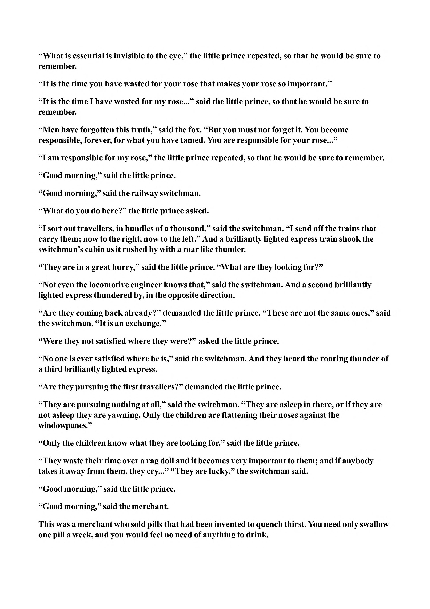

“What is essential is invisible to the eye,” the little prince repeated, so that he would be sure to remember. “It is the time you have wasted for your rose that makes your rose so important.” “It is the time I have wasted for my rose...” said the little prince, so that he would be sure to remember. “Men have forgotten this truth,” said the fox. “But you must not forget it. You become responsible, forever, for what you have tamed. You are responsible for your rose...” “I am responsible for my rose,” the little prince repeated, so that he would be sure to remember. “Good morning,” said the little prince. “Good morning,” said the railway switchman. “What do you do here?” the little prince asked. “I sort out travellers, in bundles of a thousand,” said the switchman. “I send off the trains that carry them; now to the right, now to the left.” And a brilliantly lighted express train shook the switchman’s cabin as it rushed by with a roar like thunder. “They are in a great hurry,” said the little prince. “What are they looking for?” “Not even the locomotive engineer knows that,” said the switchman. And a second brilliantly lighted express thundered by, in the opposite direction. “Are they coming back already?” demanded the little prince. “These are not the same ones,” said the switchman. “It is an exchange.” “Were they not satisfied where they were?” asked the little prince. “No one is ever satisfied where he is,” said the switchman. And they heard the roaring thunder of a third brilliantly lighted express. “Are they pursuing the first travellers?” demanded the little prince. “They are pursuing nothing at all,” said the switchman. “They are asleep in there, or if they are not asleep they are yawning. Only the children are flattening their noses against the windowpanes.” “Only the children know what they are looking for,” said the little prince. “They waste their time over a rag doll and it becomes very important to them; and if anybody takes it away from them, they cry...” “They are lucky,” the switchman said. “Good morning,” said the little prince. “Good morning,” said the merchant. This was a merchant who sold pills that had been invented to quench thirst. You need only swallow one pill a week, and you would feel no need of anything to drink.
